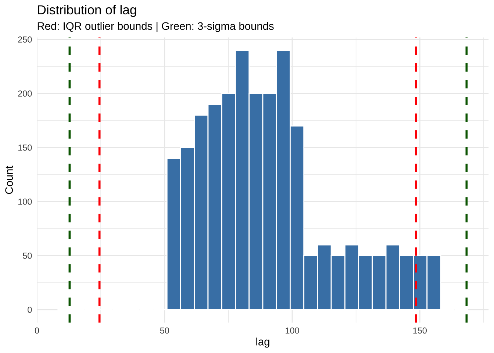
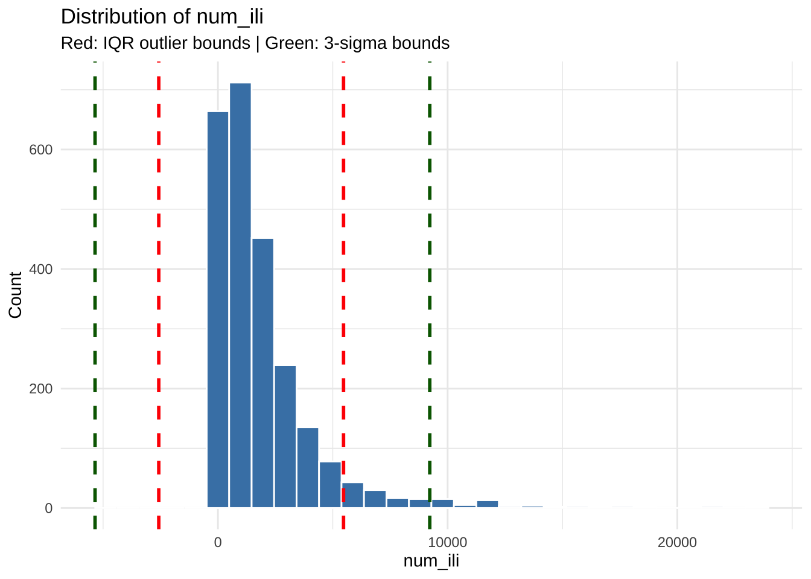
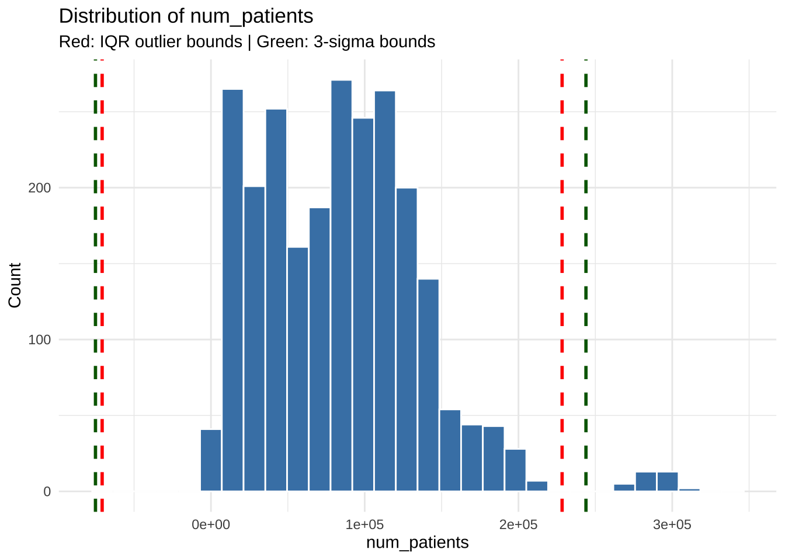
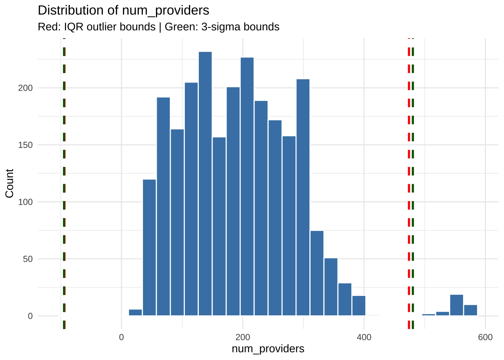
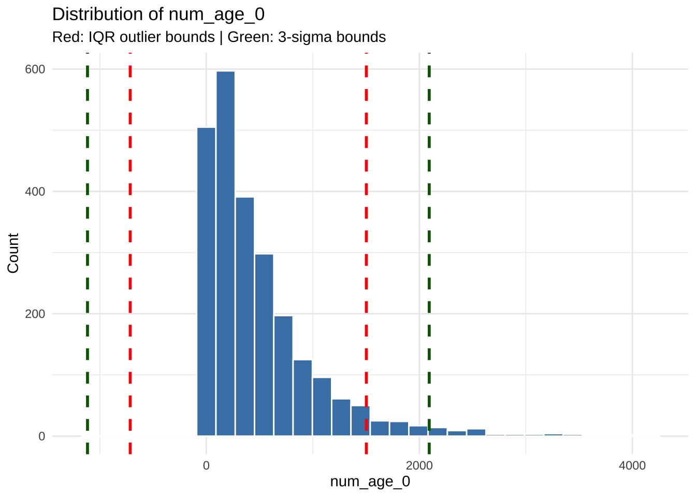
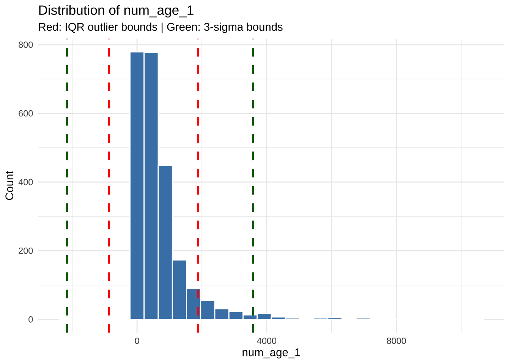
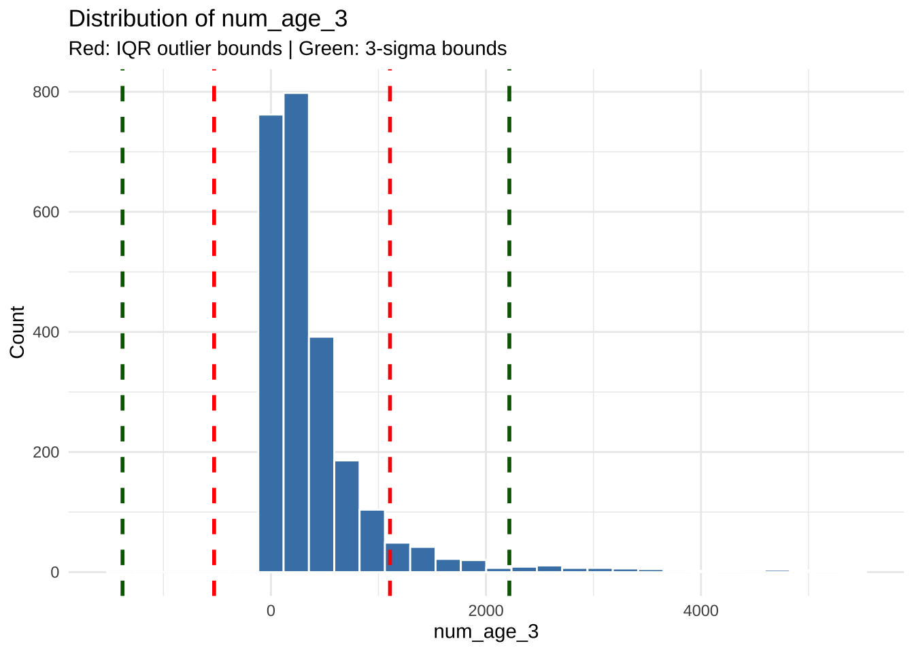
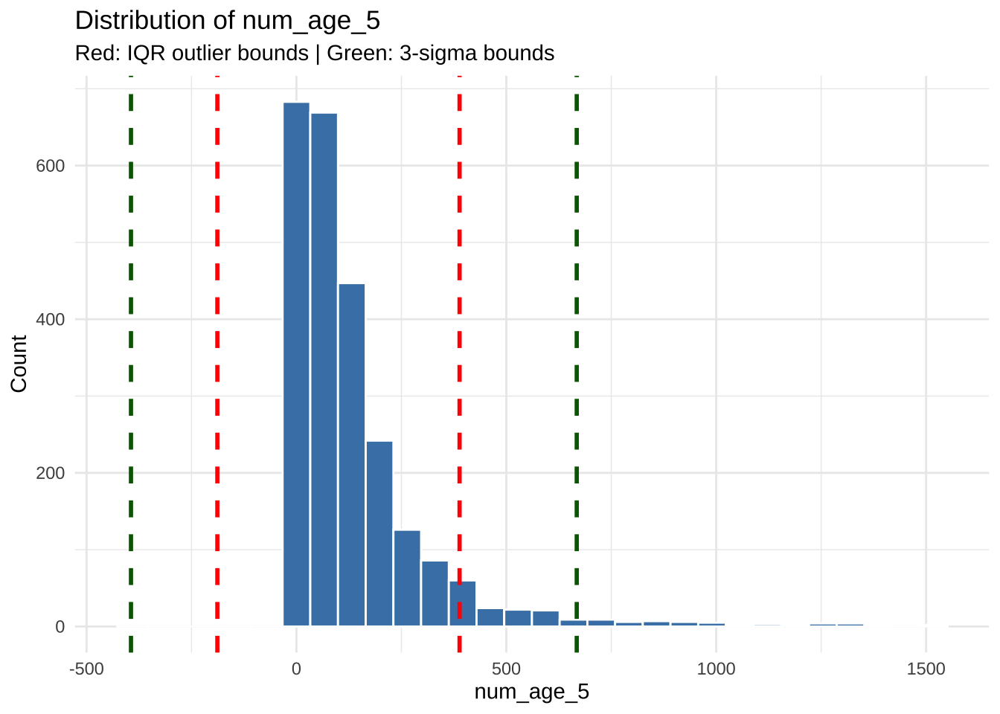
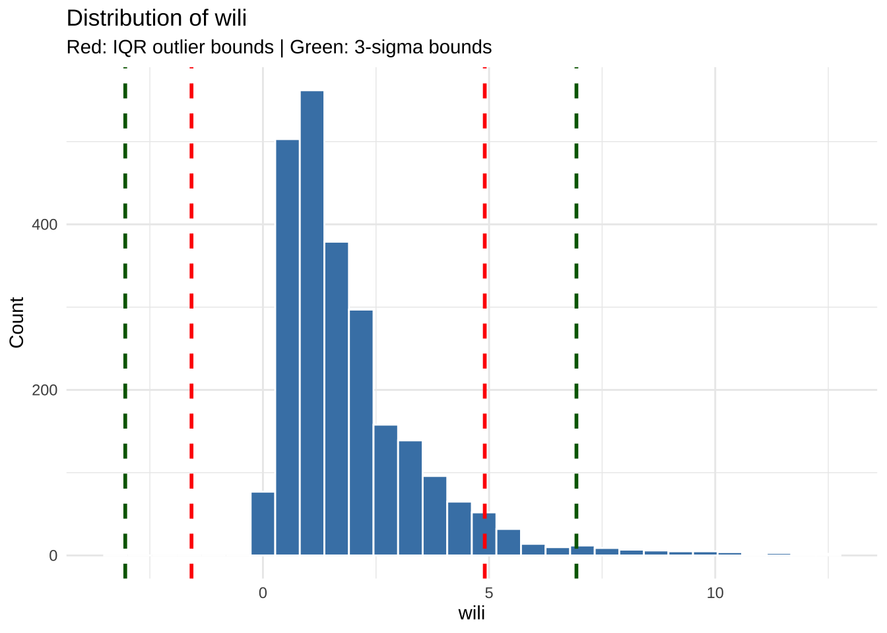
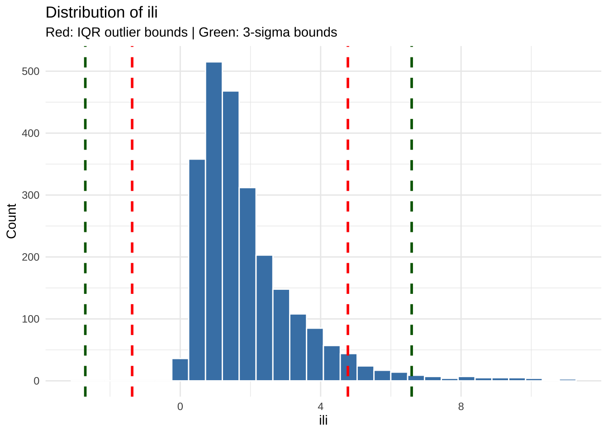

if (!requireNamespace("pacman", quietly = TRUE)) install.packages("pacman")
pacman::p_load(tidyverse, lubridate, readxl, nanoparquet, visdat, dlookr, validate, naniar, usethis, purrr, patchwork, htmltools, gridExtra)FluView Data Validation
Install & load dependencies
Load path name from .Renviron {-} TO-DO: Double-check after changing over to API pull instead of CSV
data_dir <- Sys.getenv("DATA_DIR")
if (data_dir == "") stop("DATA_DIR environment variable is not set")
file_path <- file.path(data_dir, "raw_test_data.csv")
if (!file.exists(file_path)) stop("File does not exist at the given path.")Open file into a tibble, glimpse to confirm:
data <- read_csv(file_path)Rows: 2440 Columns: 16
── Column specification ────────────────────────────────────────────────────────
Delimiter: ","
chr (1): region
dbl (11): lag, num_ili, num_patients, num_providers, num_age_0, num_age_1, ...
lgl (1): num_age_2
date (3): release_date, issue, epiweek
ℹ Use `spec()` to retrieve the full column specification for this data.
ℹ Specify the column types or set `show_col_types = FALSE` to quiet this message.glimpse(data)Rows: 2,440
Columns: 16
$ release_date <date> 2017-10-24, 2017-10-24, 2017-10-24, 2017-10-24, 2017-10…
$ region <chr> "hhs1", "hhs10", "hhs2", "hhs3", "hhs4", "hhs5", "hhs6",…
$ issue <date> 2017-10-01, 2017-10-01, 2017-10-01, 2017-10-01, 2017-10…
$ epiweek <date> 2014-09-28, 2014-09-28, 2014-09-28, 2014-09-28, 2014-09…
$ lag <dbl> 157, 157, 157, 157, 157, 157, 157, 157, 157, 157, 156, 1…
$ num_ili <dbl> 352, 61, 2253, 1692, 1174, 1083, 1680, 220, 306, 1329, 3…
$ num_patients <dbl> 51688, 11172, 136563, 128083, 128835, 106810, 101987, 50…
$ num_providers <dbl> 146, 55, 276, 234, 299, 261, 226, 84, 119, 237, 150, 56,…
$ num_age_0 <dbl> 101, 22, 869, 395, 331, 358, 446, 50, 76, 310, 109, 24, …
$ num_age_1 <dbl> 185, 30, 757, 627, 530, 400, 636, 98, 154, 577, 199, 66,…
$ num_age_2 <lgl> NA, NA, NA, NA, NA, NA, NA, NA, NA, NA, NA, NA, NA, NA, …
$ num_age_3 <dbl> 44, 7, 363, 455, 187, 181, 410, 43, 49, 220, 37, 20, 349…
$ num_age_4 <dbl> 13, 1, 157, 126, 80, 80, 111, 15, 19, 110, 24, 10, 151, …
$ num_age_5 <dbl> 9, 1, 107, 89, 46, 64, 77, 14, 8, 112, 17, 3, 115, 75, 6…
$ wili <dbl> 0.830610, 0.463650, 1.795830, 1.162260, 0.828920, 0.7445…
$ ili <dbl> 0.681009, 0.546008, 1.649790, 1.321020, 0.911243, 1.0139…Initial diagnoses
diagnose(data)# A tibble: 16 × 6
variables types missing_count missing_percent unique_count unique_rate
<chr> <chr> <int> <dbl> <int> <dbl>
1 release_date Date 0 0 4 0.00164
2 region charact… 0 0 10 0.00410
3 issue Date 0 0 4 0.00164
4 epiweek Date 0 0 244 0.1
5 lag numeric 0 0 106 0.0434
6 num_ili numeric 0 0 1786 0.732
7 num_patients numeric 0 0 2423 0.993
8 num_providers numeric 0 0 366 0.15
9 num_age_0 numeric 0 0 1050 0.430
10 num_age_1 numeric 0 0 1218 0.499
11 num_age_2 logical 2440 100 1 0.000410
12 num_age_3 numeric 0 0 935 0.383
13 num_age_4 numeric 0 0 581 0.238
14 num_age_5 numeric 0 0 494 0.202
15 wili numeric 0 0 2438 0.999
16 ili numeric 0 0 2434 0.998 diagnose_outlier(data)# A tibble: 11 × 6
variables outliers_cnt outliers_ratio outliers_mean with_mean without_mean
<chr> <int> <dbl> <dbl> <dbl> <dbl>
1 lag 90 3.69 153 90.6 88.2
2 num_ili 155 6.35 9116. 1936. 1449.
3 num_patients 35 1.43 287696. 84394. 81436.
4 num_provide… 35 1.43 554. 193. 188.
5 num_age_0 129 5.29 2126. 489. 397.
6 num_age_1 180 7.38 3323. 710. 502.
7 num_age_3 186 7.62 2064. 419. 283.
8 num_age_4 176 7.21 885. 182. 127.
9 num_age_5 163 6.68 651. 137. 100.
10 wili 134 5.49 6.89 1.94 1.66
11 ili 126 5.16 6.66 1.94 1.69Column “num_age_2” is of type
all(is.na(data$num_age_2))[1] TRUEDropping “num_age_2” because all values are NA
data <- select(data, -num_age_2)
glimpse(data)Rows: 2,440
Columns: 15
$ release_date <date> 2017-10-24, 2017-10-24, 2017-10-24, 2017-10-24, 2017-10…
$ region <chr> "hhs1", "hhs10", "hhs2", "hhs3", "hhs4", "hhs5", "hhs6",…
$ issue <date> 2017-10-01, 2017-10-01, 2017-10-01, 2017-10-01, 2017-10…
$ epiweek <date> 2014-09-28, 2014-09-28, 2014-09-28, 2014-09-28, 2014-09…
$ lag <dbl> 157, 157, 157, 157, 157, 157, 157, 157, 157, 157, 156, 1…
$ num_ili <dbl> 352, 61, 2253, 1692, 1174, 1083, 1680, 220, 306, 1329, 3…
$ num_patients <dbl> 51688, 11172, 136563, 128083, 128835, 106810, 101987, 50…
$ num_providers <dbl> 146, 55, 276, 234, 299, 261, 226, 84, 119, 237, 150, 56,…
$ num_age_0 <dbl> 101, 22, 869, 395, 331, 358, 446, 50, 76, 310, 109, 24, …
$ num_age_1 <dbl> 185, 30, 757, 627, 530, 400, 636, 98, 154, 577, 199, 66,…
$ num_age_3 <dbl> 44, 7, 363, 455, 187, 181, 410, 43, 49, 220, 37, 20, 349…
$ num_age_4 <dbl> 13, 1, 157, 126, 80, 80, 111, 15, 19, 110, 24, 10, 151, …
$ num_age_5 <dbl> 9, 1, 107, 89, 46, 64, 77, 14, 8, 112, 17, 3, 115, 75, 6…
$ wili <dbl> 0.830610, 0.463650, 1.795830, 1.162260, 0.828920, 0.7445…
$ ili <dbl> 0.681009, 0.546008, 1.649790, 1.321020, 0.911243, 1.0139…Loop through columns and sort them by type
categorize_columns <- function(df) {
col_types <- list()
for (col in names(df)) {
col_type <- class(df[[col]])[1] # Take the first class if multiple
if (!col_type %in% names(col_types)) {
col_types[[col_type]] <- c()
}
col_types[[col_type]] <- c(col_types[[col_type]], col)
}
# Remove empty categories
col_types <- col_types[sapply(col_types, length) > 0]
# Print summary information
cat("Column types present in the dataframe:\n")
for (type in names(col_types)) {
cat(sprintf("- %s: %d columns stored in variable `%s_cols`\n",
type, length(col_types[[type]]), type))
}
return(col_types)
}
categorized_columns <- categorize_columns(data)Column types present in the dataframe:
- Date: 3 columns stored in variable `Date_cols`
- character: 1 columns stored in variable `character_cols`
- numeric: 11 columns stored in variable `numeric_cols`print(categorized_columns)$Date
[1] "release_date" "issue" "epiweek"
$character
[1] "region"
$numeric
[1] "lag" "num_ili" "num_patients" "num_providers"
[5] "num_age_0" "num_age_1" "num_age_3" "num_age_4"
[9] "num_age_5" "wili" "ili" Loop through numeric columns to see if they can be converted to integers in cleaning. Initializing with a vector instead of a list because we’re only looping through 15 elements max
convert_to_integers <- character()
for (numeric_column in categorized_columns$numeric) {
if (all(round(data[[numeric_column]]) == data[[numeric_column]] & !is.na(data[[numeric_column]]))) {
convert_to_integers <- c(convert_to_integers, numeric_column)
}
}
print(convert_to_integers)[1] "lag" "num_ili" "num_patients" "num_providers"
[5] "num_age_0" "num_age_1" "num_age_3" "num_age_4"
[9] "num_age_5" Visualize outliers for all numeric columns using histograms
plots <- purrr::map(categorized_columns$numeric, function(col) {
# Calculate IQR boundaries
q1 <- quantile(data[[col]], 0.25, na.rm = TRUE)
q3 <- quantile(data[[col]], 0.75, na.rm = TRUE)
iqr <- q3 - q1
iqr_lower <- q1 - 1.5 * iqr
iqr_upper <- q3 + 1.5 * iqr
# Calculate 3-sigma boundaries
mean_val <- mean(data[[col]], na.rm = TRUE)
sd_val <- sd(data[[col]], na.rm = TRUE)
sigma_lower <- mean_val - 3 * sd_val
sigma_upper <- mean_val + 3 * sd_val
ggplot(data) +
geom_histogram(aes(x = .data[[col]]), bins = 30, fill = "steelblue", color = "white") +
# Add IQR rule lines in red
geom_vline(xintercept = c(iqr_lower, iqr_upper),
color = "red", linetype = "dashed", linewidth = 1) +
# Add 3-sigma rule lines in green
geom_vline(xintercept = c(sigma_lower, sigma_upper),
color = "darkgreen", linetype = "dashed", linewidth = 1) +
labs(title = paste("Distribution of", col),
subtitle = "Red: IQR outlier bounds | Green: 3-sigma bounds",
x = col,
y = "Count") +
theme_minimal()
})
plots[[1]]
[[2]]
[[3]]
[[4]]
[[5]]
[[6]]
[[7]]
[[8]]
[[9]]
[[10]]
[[11]]
All of these look expected, though the blip on num_patients is worth exploring
examine_outliers <- c("num_patients")